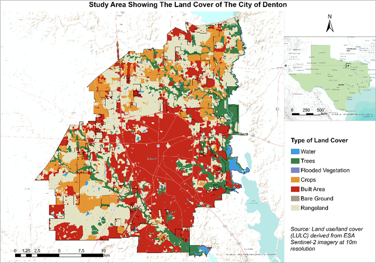

INTRODUCTION
Environmentally Sensitive Areas (ESAs) are essential components of the landscape for protecting biodiversity, soil quality, water resources, and other natural bodies at local, regional to global scales (Jennings & Reganold, 1991). They include a wide range of environmental features and zones such as wildlife habitats, riparian buffers, wetlands, and agricultural regions (Ndubisi, DeMeo, & Ditto, 1995). It has been quite a challenging issue for the preservation of cross-timbers because they lie in the metropolitan areas of Dallas-Fort Worth in Texas and Tulsa in Oklahoma (Starr et al., 2019). Recently, upland habitats have been fragmented and modified by human encroachment due to urbanization, mineral extraction, and agriculture (King & Meik, 2023). The water-related habitats should be mapped as they provide the essential ecosystem along with water filtration, groundwater discharge, and flood control. Mapping these habitats provides the monitoring and checking of their status, which are vital for both environmental and human health (Moreno-Casasola, Rosas, & Rodríguez-Medina, 2012). Recognizing and managing the habitats is a necessity when striving for well-rounded development within and in the vicinity of the study area (Hashim, Pereira, & Komoo, 2007).
OBJECTIVE
The project aimed to achieve two objectives:
STUDY AREA
Figure: Study area
METHOD ADOPTED
Initially, the LiDAR data was processed to generate Digital Elevation Models (DEMs) representing bare-earth topography and Digital Surface Models (DSMs) capturing surface features like buildings and vegetation. From these, Building Height Models (BHMs) and Canopy Height Models (CHMs) were derived by subtracting DEM values from DSM values, isolating building and vegetation heights, respectively. Spatial analyses were performed to delineate developed and undeveloped lands by incorporating features like road buffers and building footprints, ensuring the exclusion of built environments from habitat classification. Upland habitats were identified in undeveloped areas outside FEMA-designated 100-year flood zones, with vegetation exceeding one meter in height used as a criterion. Similarly, water-related habitats were mapped within flood zones by identifying woody vegetation meeting the same height threshold. Binary raster analyses involving expansion and shrink operations were employed to refine the habitat boundaries. Finally, field verification was conducted at 12 locations to validate the accuracy of the classifications, ensuring that the identified habitats corresponded to real-world conditions.
RESULTS
Figure: DSM capturing the ground, water, and vegetation
Figure: BHM representing the height of the building
Figure: CHM representing the height of the vegetation

The results reveal a detailed spatial distribution of upland and water-related habitats
within the City of Denton. Upland habitats, covering approximately 18% of the city’s total area, were
predominantly located in undeveloped lands with taller vegetation
These habitats were scattered across the city, providing critical ecological functions and biodiversity support.
Water-related habitats, comprising about 16% of the city’s area, were identified near lakes, streams,
wetlands, and other water bodies. These habitats contribute significantly to ecosystem services such as
water filtration, flood control, and groundwater recharge.
The habitat classification achieved an overall accuracy of 87.3%, with user accuracy of 87.9% for upland habitats
and 85.0% for water-related habitats. Producer accuracy was higher for upland habitats (95.9%) but lower for water-related
habitats (63.7%), highlighting some challenges in distinguishing water-related features. The Kappa coefficient of 0.7
indicated substantial agreement between the classification results and reference data. Field verification conducted at
12 locations, including South Lake Park and Pecan Creek, confirmed the accuracy of the mapped habitats, demonstrating
the validity of the methodology.
CONCLUSION
This study used LiDAR data and GIS technology to identify and map upland and water-related habitats in the City of Denton, Texas.
The study demonstrated that high-resolution LiDAR datasets, processed to create DEMs, DSMs, BHMs, and CHMs, could effectively delineate
critical habitat areas. Upland habitats, occupying 18% of the city’s area, were identified in undeveloped lands with taller vegetation
outside flood-prone zones. Water-related habitats, covering 16% of the area, were primarily located near water bodies and within
FEMA-designated 100-year flood zones.
The study concludes that LiDAR and GIS are invaluable tools for environmental management,
offering scalable methodologies applicable to other urban areas experiencing similar challenges.
The research provides a framework for sustainable development and habitat preservation in Denton
and beyond, with recommendations for incorporating additional environmental variables and temporal
analyses in future studies to enhance habitat mapping accuracy and utility.